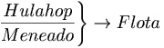

De: La Frikipedia, la enciclopedia extremadamente seria.
De: La Frikipedia, la enciclopedia extremadamente seria. De: La Frikipedia, la enciclopedia extremadamente seria.
| De la serie rarezas del mundo: | |||
| Paradoja del hulahop mágico | |||
| |||
| Cosa que representa | Las cosas que flotan | ||
| Sirve para | Demostrar la estupidez humana | ||
| ¿Existe? | Es... esto... Relativo | ||
| Trastorno del cerebro | Fisiológico | ||
| ¿Es comprensible? | ¡Para nada! | ||
| Hábitat | Hulahops | ||
| Poder | Fisicomental | ||
| Tipo de rareza | Uno entre un muchillón | ||
| ¿Natural o artificial? | Artifi.. digooo... Natural. | ||
| Nivel de frikismo | Bueno, depende de los que menean hulahops | ||
| ¿Es abundante? | La misma cantidad que el número de hulahops. | ||
«Me pregunto que pasa si meneo un hulahop a más de 10.000.000.000.000,0000000000000000000000000000000000000099 km/s... »
~ El tipo al que se le ocurrió
«¡¡¡¡ONDIASSS!!!! Habrás que pensar lo de la vida en Marte muy seriamente...»
«Desde luego, cada día se inventan cosas más raras...»
Paradoja que demuestra que cuando un cuerpo solido se menea, está flotando porque no somos capaces de explicarlo y por tanto nos sale la paradoja de las narices. Ríase usté de la teoría de la relatividad.
La paradoja del hulahop mágico es una paradoja muy simple que dice que si equivale al movimiento que hace un hulahop cuando lo meneas entre tus caderas, eso significa que  y por tanto, así se demuestra matemáticamente que cuando un sólido se menea, flota. ¿Ha quedado claro?
Pregunta: ¿Como carajo es posible que flote?
Respuesta: Bueno, es muy simple. Solamente hay que ver como al menearte provocas un efecto anti-gravitatorio de cojones que te vuelve menos denso que el aire ya que el cuerpo sólido pasa a ser un plasma por lo que sería posible destruir la tierra con una supernova gigante meneándo el hulahop a una velocidad de 10.000.000.000.000,00000000000000000000000000000000000001 km/s.
Pregunta: ¿Qué pasaría si me pusiera a menear la pecera de mi pez a una velocidad de 10.000.000.000.000,00000000000000000000000000000000000001002 km/s?
Respuesta: La pecera se desintegraría pero no destruiría el mundo gracias al agua de dentro. Ah, y también produciría un destello tan gigantesco que dejería ciego a todo el mundo menos a un suertudo.
Pregunta: ¿Que pasaría si hiciese lo mismo, pero con Chuck Norris o, peor aún, con doce Chucks Norris?
Respuesta: Seguramente, al primer meneo, los doce Chucks Norris te darían tal propicio que al segundo estarías en el centro del universo.

|
Y Josué dijo -¡Párate Sol, que ya rallas!- y el Sol se paró. Después dijo -¡Quiero que el mundo se acabe ya!- y una grieta gigante se tragó a Josué. Muchos milenios después, Bill Gates dijo -¡Créate, Microsoft!- y de la nada salió un edificio gigante llamado "Microsoft Company". Después dijo -¡Créate, paradoja rara sobre hulahops!- y de la nada salió esto. |

|
Pues, ningunas, porque esta es (señoras y señores)... ¡¡¡LA PRIMERA PARADOJA EN LA FRIKIPEDIA!!! ¡¡¡Soy un pionero, toma ya!!!!
Autor(es):